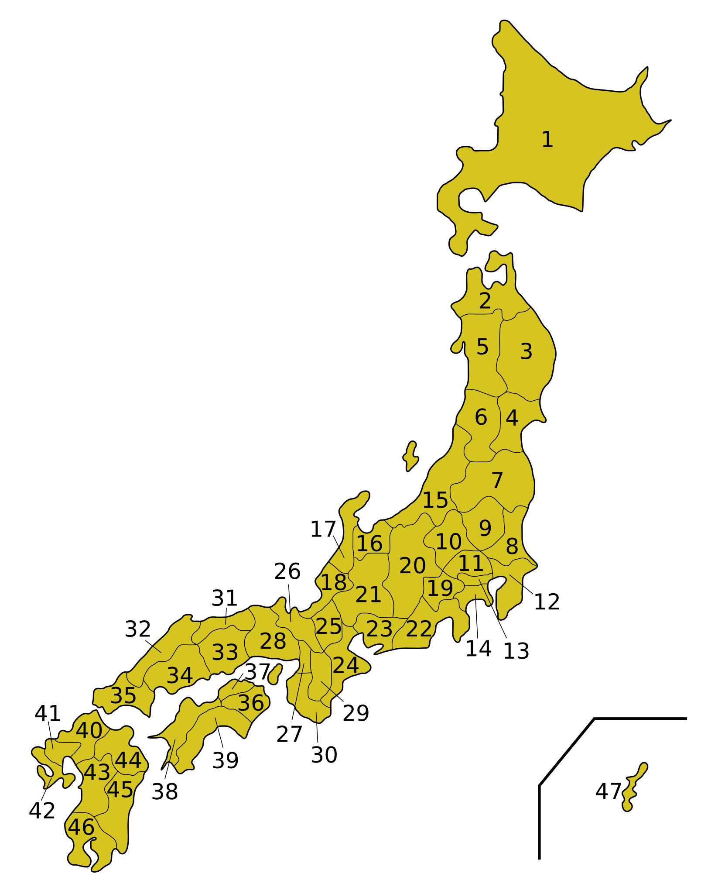

20〜40分でくり返し
クイズで練習するか、自習プリントを作るか選べます。
説明を読まなくても大丈夫。下のどちらかを選んでください。
★ まず自分のこと：今日、いちばん確認したい分野を選んでみよう。
このアプリでは、表示している8地方・8地域の区分に統一して出題します。
【やること】答えを1つ選ぼう。まちがえても大丈夫。

数字キー 1〜4 でも答えられます
おつかれさま！
地方・地域の分け方は、この画面に表示する区分に統一しています。
地方ボタンを押したあと、必要な県だけ残すこともできます。
「世界全体」または地域を選びます。主要国・首都・地域を中心に、自動でやさしい問題を作ります。
まだ選ばれていません。